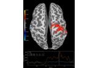
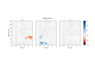
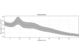

mne.time_frequency.BaseTFR#
- class mne.time_frequency.BaseTFR(inst, method, freqs, tmin, tmax, picks, proj, *, decim, n_jobs, reject_by_annotation=None, verbose=None, **method_kw)[source]#
Base class for RawTFR, EpochsTFR, and AverageTFR (for type checking only).
Note
This class should not be instantiated directly; it is provided in the public API only for type-checking purposes (e.g.,
isinstance(my_obj, BaseTFR)). To create TFR objects, use the.compute_tfr()methods onRaw,Epochs, orEvoked, or use the constructors listed below under See Also.- Parameters:
- instinstance of
Raw,Epochs, orEvoked The data from which to compute the time-frequency representation.
- method
'morlet'|'multitaper'|None Spectrotemporal power estimation method.
'morlet'uses Morlet wavelets,'multitaper'uses DPSS tapers [1].None(the default) only works when using__setstate__and will raise an error otherwise.- freqsarray_like |
None The frequencies at which to compute the power estimates. Must be an array of shape (n_freqs,).
None(the default) only works when using__setstate__and will raise an error otherwise.- tmin, tmax
float|None First and last times to include, in seconds.
Noneuses the first or last time present in the data. Default istmin=None, tmax=None(all times).- picks
str| array_like |slice|None Channels to include. Slices and lists of integers will be interpreted as channel indices. In lists, channel type strings (e.g.,
['meg', 'eeg']) will pick channels of those types, channel name strings (e.g.,['MEG0111', 'MEG2623']will pick the given channels. Can also be the string values'all'to pick all channels, or'data'to pick data channels. None (default) will pick good data channels (excluding reference MEG channels). Note that channels ininfo['bads']will be included if their names or indices are explicitly provided.- projbool
Whether to apply SSP projection vectors before spectral estimation. Default is
False.- decim
int|slice Decimation factor, applied after time-frequency decomposition.
if
int, returnstfr[..., ::decim](keep only every Nth sample along the time axis).if
slice, returnstfr[..., decim](keep only the specified slice along the time axis).
Note
Decimation is done after convolutions and may create aliasing artifacts.
- n_jobs
int|None The number of jobs to run in parallel. If
-1, it is set to the number of CPU cores. Requires thejoblibpackage.None(default) is a marker for unset that will be interpreted asn_jobs=1(sequential execution) unless the call is performed under ajoblib.parallel_configcontext manager that sets another value forn_jobs.- reject_by_annotationbool
Whether to omit bad spans of data before spectrotemporal power estimation. If
True, spans with annotations whose description begins withbadwill be represented withnp.nanin the time-frequency representation.- verbosebool |
str|int|None Control verbosity of the logging output. If
None, use the default verbosity level. See the logging documentation andmne.verbose()for details. Should only be passed as a keyword argument.- **method_kw
Additional keyword arguments passed to the spectrotemporal estimation function (e.g.,
n_cycles, use_fft, zero_meanfor Morlet method orn_cycles, use_fft, zero_mean, time_bandwidthfor multitaper method). Seetfr_array_morlet()andtfr_array_multitaper()for additional details.
- instinstance of
- Attributes:
baselineStart and end of the baseline period (in seconds).
ch_namesThe channel names.
compensation_gradeThe current gradient compensation grade.
dataThe time-frequency-resolved power estimates.
freqsThe frequencies at which power estimates were computed.
methodThe method used to compute the time-frequency power estimates.
sfreqSampling frequency of the data.
shapeData shape.
timesThe time points present in the data (in seconds).
tmaxLast time point.
tminFirst time point.
weightsThe weights used for each taper in the time-frequency estimates.
Methods
__add__(other)Add two TFR instances.
__contains__(ch_type)Check channel type membership.
__mul__(num)Multiply a TFR instance by a scalar.
__sub__(other)Subtract two TFR instances.
add_channels(add_list[,force_update_info])Append new channels from other MNE objects to the instance.
add_reference_channels(ref_channels)Add reference channels to data that consists of all zeros.
apply_baseline(baseline[,mode,verbose])Baseline correct the data.
copy()Return copy of the TFR instance.
crop([tmin,tmax,fmin,fmax,include_tmax])Crop data to a given time interval in place.
decimate(decim[,offset,verbose])Decimate the time-series data.
drop_channels(ch_names[,on_missing])Drop channel(s).
get_channel_types([picks,unique,only_data_chs])Get a list of channel type for each channel.
get_data([picks,exclude,fmin,fmax,tmin,...])Get time-frequency data in NumPy array format.
pick(picks[,exclude,verbose])Pick a subset of channels.
pick_channels(ch_names[,ordered,verbose])pick_types([meg,eeg,stim,eog,ecg,emg,...])plot([picks,exclude,tmin,tmax,fmin,...])Plot TFRs as two-dimensional time-frequency images.
plot_joint(*[,timefreqs,picks,exclude,...])Plot TFRs as a two-dimensional image with topomap highlights.
plot_topo([picks,baseline,mode,tmin,...])Plot a TFR image for each channel in a sensor layout arrangement.
plot_topomap([tmin,tmax,fmin,fmax,...])Plot topographic maps of specific time-frequency intervals of TFR data.
reorder_channels(ch_names)Reorder channels.
save(fname,*[,overwrite,verbose])Save time-frequency data to disk (in HDF5 format).
shift_time(tshift[,relative])Shift time scale in epoched or evoked data.
time_as_index(times[,use_rounding])Convert time to indices.
to_data_frame([picks,index,long_format,...])Export data in tabular structure as a pandas DataFrame.
See also
- __add__(other)[source]#
Add two TFR instances.
- Parameters:
- otherinstance of
RawTFR| instance ofEpochsTFR| instance ofAverageTFR The TFR instance to add. Must have the same type as
self, and matching.timesand.freqsattributes.
- otherinstance of
- Returns:
- tfrinstance of
RawTFR| instance ofEpochsTFR| instance ofAverageTFR A new TFR instance, of the same type as
self.
- tfrinstance of
- __contains__(ch_type)[source]#
Check channel type membership.
- Parameters:
- ch_type
str Channel type to check for. Can be e.g.
'meg','eeg','stim', etc.
- ch_type
- Returns:
- inbool
Whether or not the instance contains the given channel type.
Examples
Channel type membership can be tested as:
>>> 'meg' in inst True >>> 'seeg' in inst False
- __mul__(num)[source]#
Multiply a TFR instance by a scalar.
- Parameters:
- Returns:
- tfrinstance of
RawTFR| instance ofEpochsTFR| instance ofAverageTFR A new TFR instance, of the same type as
self.
- tfrinstance of
- __sub__(other)[source]#
Subtract two TFR instances.
- Parameters:
- otherinstance of
RawTFR| instance ofEpochsTFR| instance ofAverageTFR The TFR instance to subtract. Must have the same type as
self, and matching.timesand.freqsattributes.
- otherinstance of
- Returns:
- tfrinstance of
RawTFR| instance ofEpochsTFR| instance ofAverageTFR A new TFR instance, of the same type as
self.
- tfrinstance of
- add_channels(add_list, force_update_info=False)[source]#
Append new channels from other MNE objects to the instance.
- Parameters:
- add_list
list A list of MNE objects to append to the current instance. The channels contained in the other instances are appended to the channels of the current instance. Therefore, all other instances must be of the same type as the current object. See notes on how to add data coming from an array.
- force_update_infobool
If True, force the info for objects to be appended to match the values of the current instance. This should generally only be used when adding stim channels for which important metadata wont be overwritten.
New in v0.12.
- add_list
- Returns:
See also
Notes
If
selfis a Raw instance that has been preloaded into anumpy.memmapinstance, the memmap will be resized.This function expects an MNE object to be appended (e.g.
Raw,Epochs,Evoked). If you simply want to add a channel based on values of an np.ndarray, you need to create aRawArray. See <https://mne.tools/mne-project-template/auto_examples/plot_mne_objects_from_arrays.html>`_
- add_reference_channels(ref_channels)[source]#
Add reference channels to data that consists of all zeros.
Adds reference channels to data that were not included during recording. This is useful when you need to re-reference your data to different channels. These added channels will consist of all zeros.
- Parameters:
- Returns:
- apply_baseline(baseline, mode='mean', verbose=None)[source]#
Baseline correct the data.
- Parameters:
- baseline
None|tupleof length 2 The time interval to consider as baseline when applying baseline correction. If
None, do not apply baseline correction. If a tuple(a, b), the interval is betweenaandb(in seconds), including the endpoints. IfaisNone, the beginning of the data is used; and ifbisNone, it is set to the end of the data. If(None, None), the entire time interval is used.Note
The baseline
(a, b)includes both endpoints, i.e. all timepointstsuch thata <= t <= b.How baseline is computed is determined by the
modeparameter.- modemean | ratio | logratio | percent | zscore | zlogratio
Perform baseline correction by
subtracting the mean of baseline values (mean)
dividing by the mean of baseline values (ratio)
dividing by the mean of baseline values and taking the log (logratio)
subtracting the mean of baseline values followed by dividing by the mean of baseline values (percent)
subtracting the mean of baseline values and dividing by the standard deviation of baseline values (zscore)
dividing by the mean of baseline values, taking the log, and dividing by the standard deviation of log baseline values (zlogratio)
- verbosebool |
str|int|None Control verbosity of the logging output. If
None, use the default verbosity level. See the logging documentation andmne.verbose()for details. Should only be passed as a keyword argument.
- baseline
- Returns:
- instinstance of
RawTFR,EpochsTFR, orAverageTFR The modified instance.
- instinstance of
Examples using
apply_baseline:
Non-parametric 1 sample cluster statistic on single trial power
Non-parametric 1 sample cluster statistic on single trial power
Non-parametric between conditions cluster statistic on single trial power
Non-parametric between conditions cluster statistic on single trial power
Mass-univariate twoway repeated measures ANOVA on single trial power
Mass-univariate twoway repeated measures ANOVA on single trial power
Spatiotemporal permutation F-test on full sensor data
Spatiotemporal permutation F-test on full sensor data
- property baseline#
Start and end of the baseline period (in seconds).
- property ch_names#
The channel names.
- property compensation_grade#
The current gradient compensation grade.
- crop(tmin=None, tmax=None, fmin=None, fmax=None, include_tmax=True)[source]#
Crop data to a given time interval in place.
- Parameters:
- tmin, tmax
float|None First and last times to include, in seconds.
Noneuses the first or last time present in the data. Default istmin=None, tmax=None(all times).- fmin
float|None Lowest frequency of selection in Hz.
New in v0.18.0.
- fmax
float|None Highest frequency of selection in Hz.
New in v0.18.0.
- include_tmaxbool
If True (default), include tmax. If False, exclude tmax (similar to how Python indexing typically works).
New in v0.19.
- tmin, tmax
- Returns:
- instinstance of
RawTFR,EpochsTFR, orAverageTFR The modified instance.
- instinstance of
Examples using
crop:Compute source level time-frequency timecourses using a DICS beamformer
Compute source level time-frequency timecourses using a DICS beamformerCompute and visualize ERDS maps
Compute and visualize ERDS maps
Non-parametric 1 sample cluster statistic on single trial power
Non-parametric 1 sample cluster statistic on single trial power
- property data#
The time-frequency-resolved power estimates.
- decimate(decim, offset=0, *, verbose=None)[source]#
Decimate the time-series data.
- Parameters:
- decim
int Factor by which to subsample the data.
Warning
Low-pass filtering is not performed, this simply selects every Nth sample (where N is the value passed to
decim), i.e., it compresses the signal (see Notes). If the data are not properly filtered, aliasing artifacts may occur. See Resampling and decimating data for more information.- offset
int Apply an offset to where the decimation starts relative to the sample corresponding to t=0. The offset is in samples at the current sampling rate.
New in v0.12.
- verbosebool |
str|int|None Control verbosity of the logging output. If
None, use the default verbosity level. See the logging documentation andmne.verbose()for details. Should only be passed as a keyword argument.
- decim
- Returns:
- instMNE-object
The decimated object.
See also
Notes
For historical reasons,
decim/ decimation refers to simply subselecting samples from a given signal. This contrasts with the broader signal processing literature, where decimation is defined as (quoting [2], p. 172; which cites [3]):a general system for downsampling by a factor of M is the one shown in Figure 4.23. Such a system is called a decimator, and downsampling by lowpass filtering followed by compression [i.e, subselecting samples] has been termed decimation (Crochiere and Rabiner, 1983).
Hence decimation in MNE is what is considered compression in the signal processing community.
Decimation can be done multiple times. For example,
inst.decimate(2).decimate(2)will be the same asinst.decimate(4).If
decimis 1, this method does not copy the underlying data.New in v0.10.0.
References
- drop_channels(ch_names, on_missing='raise')[source]#
Drop channel(s).
- Parameters:
- Returns:
See also
Notes
New in v0.9.0.
- property freqs#
The frequencies at which power estimates were computed.
- get_channel_types(picks=None, unique=False, only_data_chs=False)[source]#
Get a list of channel type for each channel.
- Parameters:
- picks
str| array_like |slice|None Channels to include. Slices and lists of integers will be interpreted as channel indices. In lists, channel type strings (e.g.,
['meg', 'eeg']) will pick channels of those types, channel name strings (e.g.,['MEG0111', 'MEG2623']will pick the given channels. Can also be the string values'all'to pick all channels, or'data'to pick data channels. None (default) will pick all channels. Note that channels ininfo['bads']will be included if their names or indices are explicitly provided.- uniquebool
Whether to return only unique channel types. Default is
False.- only_data_chsbool
Whether to ignore non-data channels. Default is
False.
- picks
- Returns:
- channel_types
list The channel types.
- channel_types
- get_data(picks=None, exclude='bads', fmin=None, fmax=None, tmin=None, tmax=None, return_times=False, return_freqs=False, return_tapers=False)[source]#
Get time-frequency data in NumPy array format.
- Parameters:
- picks
str| array_like |slice|None Channels to include. Slices and lists of integers will be interpreted as channel indices. In lists, channel type strings (e.g.,
['meg', 'eeg']) will pick channels of those types, channel name strings (e.g.,['MEG0111', 'MEG2623']will pick the given channels. Can also be the string values'all'to pick all channels, or'data'to pick data channels. None (default) will pick good data channels (excluding reference MEG channels). Note that channels ininfo['bads']will be included if their names or indices are explicitly provided.- exclude
listofstr| bads Channel names to exclude. If
'bads', channels inspectrum.info['bads']are excluded; pass an empty list to include all channels (including bad channels, if any).- fmin, fmax
float The lower- and upper-bound on frequencies of interest. Default is
Nonewhich is equivalent tofmin=0, fmax=np.inf(spans all frequencies present in the data).- tmin, tmax
float|None First and last times to include, in seconds.
Noneuses the first or last time present in the data. Default istmin=None, tmax=None(all times).- return_timesbool
Whether to return the time values for the requested time range. Default is
False.- return_freqsbool
Whether to return the frequency bin values for the requested frequency range. Default is
False.- return_tapersbool
Whether to return the taper numbers. Default is
False.New in v1.10.0.
- picks
- Returns:
- data
array The requested data in a NumPy array.
- times
array The time values for the requested data range. Only returned if
return_timesisTrue.- freqs
array The frequency values for the requested data range. Only returned if
return_freqsisTrue.- tapers
array|None The taper numbers. Only returned if
return_tapersisTrue. Will beNoneif a taper dimension is not present in the data.
- data
Notes
Returns a copy of the underlying data (not a view).
- property method#
The method used to compute the time-frequency power estimates.
- pick(picks, exclude=(), *, verbose=None)[source]#
Pick a subset of channels.
- Parameters:
- picks
str| array_like |slice|None Channels to include. Slices and lists of integers will be interpreted as channel indices. In lists, channel type strings (e.g.,
['meg', 'eeg']) will pick channels of those types, channel name strings (e.g.,['MEG0111', 'MEG2623']will pick the given channels. Can also be the string values'all'to pick all channels, or'data'to pick data channels. None (default) will pick all channels. Note that channels ininfo['bads']will be included if their names or indices are explicitly provided.- exclude
list|str Set of channels to exclude, only used when picking based on types (e.g., exclude=bads when picks=meg).
- verbosebool |
str|int|None Control verbosity of the logging output. If
None, use the default verbosity level. See the logging documentation andmne.verbose()for details. Should only be passed as a keyword argument.New in v0.24.0.
- picks
- Returns:
- pick_channels(ch_names, ordered=True, *, verbose=None)[source]#
Warning
LEGACY: New code should use inst.pick().
Pick some channels.
- Parameters:
- ch_names
list The list of channels to select.
- orderedbool
If True (default), ensure that the order of the channels in the modified instance matches the order of
ch_names.New in v0.20.0.
Changed in version 1.7: The default changed from False in 1.6 to True in 1.7.
- verbosebool |
str|int|None Control verbosity of the logging output. If
None, use the default verbosity level. See the logging documentation andmne.verbose()for details. Should only be passed as a keyword argument.New in v1.1.
- ch_names
- Returns:
See also
Notes
If
orderedisFalse, the channel names given viach_namesare assumed to be a set, that is, their order does not matter. In that case, the original order of the channels in the data is preserved. Apart from usingordered=True, you may also usereorder_channelsto set channel order, if necessary.New in v0.9.0.
- pick_types(meg=False, eeg=False, stim=False, eog=False, ecg=False, emg=False, ref_meg='auto', *, misc=False, resp=False, chpi=False, exci=False, ias=False, syst=False, seeg=False, dipole=False, gof=False, bio=False, ecog=False, fnirs=False, csd=False, dbs=False, temperature=False, gsr=False, eyetrack=False, include=(), exclude='bads', selection=None, verbose=None)[source]#
Warning
LEGACY: New code should use inst.pick().
Pick some channels by type and names.
- Parameters:
- megbool |
str If True include MEG channels. If string it can be mag, grad, planar1 or planar2 to select only magnetometers, all gradiometers, or a specific type of gradiometer.
- eegbool
If True include EEG channels.
- stimbool
If True include stimulus channels.
- eogbool
If True include EOG channels.
- ecgbool
If True include ECG channels.
- emgbool
If True include EMG channels.
- ref_megbool |
str If True include CTF / 4D reference channels. If auto, reference channels are included if compensations are present and
megis not False. Can also be the string options for themegparameter.- miscbool
If True include miscellaneous analog channels.
- respbool
If
Trueinclude respiratory channels.- chpibool
If True include continuous HPI coil channels.
- excibool
Flux excitation channel used to be a stimulus channel.
- iasbool
Internal Active Shielding data (maybe on Triux only).
- systbool
System status channel information (on Triux systems only).
- seegbool
Stereotactic EEG channels.
- dipolebool
Dipole time course channels.
- gofbool
Dipole goodness of fit channels.
- biobool
Bio channels.
- ecogbool
Electrocorticography channels.
- fnirsbool |
str Functional near-infrared spectroscopy channels. If True include all fNIRS channels. If False (default) include none. If string it can be hbo (to include channels measuring oxyhemoglobin) or hbr (to include channels measuring deoxyhemoglobin).
- csdbool
EEG-CSD channels.
- dbsbool
Deep brain stimulation channels.
- temperaturebool
Temperature channels.
- gsrbool
Galvanic skin response channels.
- eyetrackbool |
str Eyetracking channels. If True include all eyetracking channels. If False (default) include none. If string it can be eyegaze (to include eye position channels) or pupil (to include pupil-size channels).
- include
listofstr List of additional channels to include. If empty do not include any.
- exclude
listofstr|str List of channels to exclude. If bads (default), exclude channels in
info['bads'].- selection
listofstr Restrict sensor channels (MEG, EEG, etc.) to this list of channel names.
- verbosebool |
str|int|None Control verbosity of the logging output. If
None, use the default verbosity level. See the logging documentation andmne.verbose()for details. Should only be passed as a keyword argument.
- megbool |
- Returns:
See also
Notes
New in v0.9.0.
- plot(picks=None, *, exclude=(), tmin=None, tmax=None, fmin=0.0, fmax=inf, baseline=None, mode='mean', dB=False, combine=None, layout=None, yscale='auto', vlim=(None, None), cnorm=None, cmap=None, colorbar=True, title=None, mask=None, mask_style=None, mask_cmap='Greys', mask_alpha=0.1, axes=None, show=True, verbose=None)[source]#
Plot TFRs as two-dimensional time-frequency images.
- Parameters:
- picks
str| array_like |slice|None Channels to include. Slices and lists of integers will be interpreted as channel indices. In lists, channel type strings (e.g.,
['meg', 'eeg']) will pick channels of those types, channel name strings (e.g.,['MEG0111', 'MEG2623']will pick the given channels. Can also be the string values'all'to pick all channels, or'data'to pick data channels. None (default) will pick good data channels. Note that channels ininfo['bads']will be included if their names or indices are explicitly provided.- exclude
listofstr| bads Channel names to exclude from being drawn. If
'bads', channels inspectrum.info['bads']are excluded; pass an empty list to include all channels (including bad channels, if any).- tmin, tmax
float|None First and last times to include, in seconds.
Noneuses the first or last time present in the data. Default istmin=None, tmax=None(all times).- fmin, fmax
float The lower- and upper-bound on frequencies of interest. Default is
Nonewhich is equivalent tofmin=0, fmax=np.inf(spans all frequencies present in the data).- baseline
None|tupleof length 2 The time interval to consider as baseline when applying baseline correction. If
None, do not apply baseline correction. If a tuple(a, b), the interval is betweenaandb(in seconds), including the endpoints. IfaisNone, the beginning of the data is used; and ifbisNone, it is set to the end of the data. If(None, None), the entire time interval is used.Note
The baseline
(a, b)includes both endpoints, i.e. all timepointstsuch thata <= t <= b.How baseline is computed is determined by the
modeparameter.- modemean | ratio | logratio | percent | zscore | zlogratio
Perform baseline correction by
subtracting the mean of baseline values (mean) (default)
dividing by the mean of baseline values (ratio)
dividing by the mean of baseline values and taking the log (logratio)
subtracting the mean of baseline values followed by dividing by the mean of baseline values (percent)
subtracting the mean of baseline values and dividing by the standard deviation of baseline values (zscore)
dividing by the mean of baseline values, taking the log, and dividing by the standard deviation of log baseline values (zlogratio)
- dBbool
Whether to plot on a decibel scale. If
True, plots 10 log(data).- combinemean | rms |
callable()|None How to aggregate across channels. If
None, plot one figure per selected channel. If a string,"mean"usesnumpy.mean(),"rms"computes the root-mean-square. Ifcallable(), it must operate on anarrayof shape(n_channels, n_freqs, n_times)and return an array of shape(n_freqs, n_times). Defaults toNone.Changed in version 1.3: Added support for
callable.- layoutinstance of
Layout|None Layout instance specifying sensor positions (does not need to be specified for Neuromag data). If
None(default), the layout is inferred from the data (if possible).- yscaleauto | linear | log
The scale of the y (frequency) axis. linear gives linear y axis, log gives log-spaced y axis and auto detects if frequencies are log-spaced and if so sets the y axis to log. Default is auto.
New in v0.14.0.
- vlim
tupleof length 2 Lower and upper bounds of the colormap, typically a numeric value in the same units as the data. If both entries are
None, the bounds are set at the maximum absolute value of the data (yielding a colormap with midpoint at 0), or(0, max(abs(data)))if the (possibly baselined) data are all-positive. ProvidingNonefor just one entry will set the corresponding boundary at the min/max of the data. Defaults to(None, None).- cnorm
matplotlib.colors.Normalize|None How to normalize the colormap. If
None, standard linear normalization is performed. If notNone,vminandvmaxwill be ignored. See Matplotlib docs for more details on colormap normalization, and the ERDs example for an example of its use.New in v0.24.
- cmapmatplotlib colormap | (colormap, bool) | interactive |
None Colormap to use. If
tuple, the first value indicates the colormap to use and the second value is a boolean defining interactivity. In interactive mode the colors are adjustable by clicking and dragging the colorbar with left and right mouse button. Left mouse button moves the scale up and down and right mouse button adjusts the range. Hitting space bar resets the range. Up and down arrows can be used to change the colormap. IfNone,'Reds'is used for data that is either all-positive or all-negative, and'RdBu_r'is used otherwise.'interactive'is equivalent to(None, True). Defaults toNone.Warning
Interactive mode works smoothly only for a small amount of topomaps. Interactive mode is disabled by default for more than 2 topomaps.
- colorbarbool
Whether to add a colorbar to the plot. Default is
True.- title
str| auto |None Title for the plot. If
"auto", will use the channel name (ifcombineisNone) or state the number and method of combined channels used to generate the plot. IfNone, no title is shown. Default isNone.- mask
ndarray|None An
arrayofbooleanvalues, of the same shape as the data. Data that corresponds toFalseentries in the mask are plotted differently, as determined bymask_style,mask_alpha, andmask_cmap. Useful for, e.g., highlighting areas of statistical significance.New in v0.16.0.
- mask_style
None| both | contour | mask How to distinguish the masked/unmasked regions of the plot. If
"contour", a line is drawn around the areas where the mask isTrue. If"mask", areas where the mask isFalsewill be (partially) transparent, as determined bymask_alpha. If"both", both a contour and transparency are used. Default isNone, which is silently ignored ifmaskisNoneand is interpreted like"both"otherwise.New in v0.17.
- mask_cmapmatplotlib colormap |
str|None Colormap to use for masked areas of the plot. If a
str, must be a valid Matplotlib colormap name. If None,cmapis used for both masked and unmasked areas. Ignored ifmaskisNone. Default is'Greys'.New in v0.17.
- mask_alpha
float Relative opacity of the masked region versus the unmasked region, given as a
floatbetween 0 and 1 (i.e., 0 means masked areas are not visible at all). Defaults to0.1.New in v0.16.0.
- axesinstance of
Axes|listofAxes|None The axes to plot into. If
None, a newFigurewill be created with the correct number of axes. IfAxesare provided (either as a single instance or alistof axes), the number of axes provided must match the number of picks. Ifcombineis not None,axesmust either be an instance of Axes, or a list of length 1. Default isNone.- showbool
Show the figure if
True.- verbosebool |
str|int|None Control verbosity of the logging output. If
None, use the default verbosity level. See the logging documentation andmne.verbose()for details. Should only be passed as a keyword argument.
- picks
- Returns:
- figs
listof instances ofmatplotlib.figure.Figure A list of figures containing the time-frequency power.
- figs
Examples using
plot:
Decoding in time-frequency space using Common Spatial Patterns (CSP)
Decoding in time-frequency space using Common Spatial Patterns (CSP)
Time-frequency on simulated data (Multitaper vs. Morlet vs. Stockwell vs. Hilbert)
Time-frequency on simulated data (Multitaper vs. Morlet vs. Stockwell vs. Hilbert)Frequency and time-frequency sensor analysis
Frequency and time-frequency sensor analysis
- plot_joint(*, timefreqs=None, picks=None, exclude=(), combine='mean', tmin=None, tmax=None, fmin=None, fmax=None, baseline=None, mode='mean', dB=False, yscale='auto', vlim=(None, None), cnorm=None, cmap=None, colorbar=True, title=None, show=True, topomap_args=None, image_args=None, verbose=None)[source]#
Plot TFRs as a two-dimensional image with topomap highlights.
- Parameters:
- timefreqs
None|listoftuple|dictoftuple The time-frequency point(s) for which topomaps will be plotted. See Notes.
- picks
str| array_like |slice|None Channels to include. Slices and lists of integers will be interpreted as channel indices. In lists, channel type strings (e.g.,
['meg', 'eeg']) will pick channels of those types, channel name strings (e.g.,['MEG0111', 'MEG2623']will pick the given channels. Can also be the string values'all'to pick all channels, or'data'to pick data channels. None (default) will pick good data channels. Note that channels ininfo['bads']will be included if their names or indices are explicitly provided.- exclude
listofstr| bads Channel names to exclude. If
'bads', channels ininfo['bads']are excluded; pass an empty list to include all channels (including bad channels, if any). Default is an emptytuplewhich includes all channels.- combinemean | rms |
callable() How to aggregate across channels. If a string,
"mean"usesnumpy.mean(),"rms"computes the root-mean-square. Ifcallable(), it must operate on anarrayof shape(n_channels, n_freqs, n_times)and return an array of shape(n_freqs, n_times). Defaults to"mean".Changed in version 1.3: Added support for
callable.- tmin, tmax
float|None First and last times to include, in seconds.
Noneuses the first or last time present in the data. Default istmin=None, tmax=None(all times).- fmin, fmax
float The lower- and upper-bound on frequencies of interest. Default is
Nonewhich is equivalent tofmin=0, fmax=np.inf(spans all frequencies present in the data).- baseline
None|tupleof length 2 The time interval to consider as baseline when applying baseline correction. If
None, do not apply baseline correction. If a tuple(a, b), the interval is betweenaandb(in seconds), including the endpoints. IfaisNone, the beginning of the data is used; and ifbisNone, it is set to the end of the data. If(None, None), the entire time interval is used.Note
The baseline
(a, b)includes both endpoints, i.e. all timepointstsuch thata <= t <= b.How baseline is computed is determined by the
modeparameter.- modemean | ratio | logratio | percent | zscore | zlogratio
Perform baseline correction by
subtracting the mean of baseline values (mean) (default)
dividing by the mean of baseline values (ratio)
dividing by the mean of baseline values and taking the log (logratio)
subtracting the mean of baseline values followed by dividing by the mean of baseline values (percent)
subtracting the mean of baseline values and dividing by the standard deviation of baseline values (zscore)
dividing by the mean of baseline values, taking the log, and dividing by the standard deviation of log baseline values (zlogratio)
- dBbool
Whether to plot on a decibel scale. If
True, plots 10 log(data).- yscaleauto | linear | log
The scale of the y (frequency) axis. linear gives linear y axis, log gives log-spaced y axis and auto detects if frequencies are log-spaced and if so sets the y axis to log. Default is auto.
- vlim
tupleof length 2 Lower and upper bounds of the colormap, typically a numeric value in the same units as the data. If both entries are
None, the bounds are set at the maximum absolute value of the data (yielding a colormap with midpoint at 0), or(0, max(abs(data)))if the (possibly baselined) data are all-positive. ProvidingNonefor just one entry will set the corresponding boundary at the min/max of the data. To specify the colormap separately for the topomap annotations, seetopomap_args. Defaults to(None, None).- cnorm
matplotlib.colors.Normalize|None How to normalize the colormap. If
None, standard linear normalization is performed. If notNone,vminandvmaxwill be ignored. See Matplotlib docs for more details on colormap normalization, and the ERDs example for an example of its use.- cmapmatplotlib colormap |
str The
Colormapto use. If astr, must be a valid Matplotlib colormap name. Default is"RdBu_r".- colorbarbool
Whether to add a colorbar to the plot (for the topomap annotations). Not compatible with user-defined
axes. Default isTrue.- title
str|None The title of the generated figure. If
None(default), no title is displayed.- showbool
Show the figure if
True.- topomap_args
dict|None Keyword arguments to pass to
mne.viz.plot_topomap().axesandshoware ignored. Iftimesis not in this dict, automatic peak detection is used. Beyond that, ifNone, no customizable arguments will be passed. Defaults toNone(i.e., an emptydict).- image_args
dict|None Keyword arguments to pass to
mne.time_frequency.AverageTFR.plot().axesandshoware ignored. Defaults toNone(i.e., and emptydict).- verbosebool |
str|int|None Control verbosity of the logging output. If
None, use the default verbosity level. See the logging documentation andmne.verbose()for details. Should only be passed as a keyword argument.
- timefreqs
- Returns:
- fig
matplotlib.figure.Figure The figure containing the topography.
- fig
Notes
timefreqshas three different modes: tuples, dicts, and auto. For (list of) tuple(s) mode, each tuple defines a pair (time, frequency) in s and Hz on the TFR plot. For example, to look at 10 Hz activity 1 second into the epoch and 3 Hz activity 300 ms into the epoch,timefreqs=((1, 10), (.3, 3))
If provided as a dictionary, (time, frequency) tuples are keys and (time_window, frequency_window) tuples are the values indicating the width of the windows (centered on the time and frequency indicated by the key) to be averaged over. For example,
timefreqs={(1, 10): (0.1, 2)}
would translate into a window that spans 0.95 to 1.05 seconds and 9 to 11 Hz. If
None, a single topomap will be plotted at the absolute peak across the time-frequency representation.New in v0.16.0.
Examples using
plot_joint:Frequency and time-frequency sensor analysis
Frequency and time-frequency sensor analysis
- plot_topo(picks=None, baseline=None, mode='mean', tmin=None, tmax=None, fmin=None, fmax=None, vmin=None, vmax=None, layout=None, cmap='RdBu_r', title=None, dB=False, colorbar=True, layout_scale=0.945, show=True, border='none', fig_facecolor='k', fig_background=None, font_color='w', yscale='auto', verbose=None)[source]#
Plot a TFR image for each channel in a sensor layout arrangement.
- Parameters:
- picks
str| array_like |slice|None Channels to include. Slices and lists of integers will be interpreted as channel indices. In lists, channel type strings (e.g.,
['meg', 'eeg']) will pick channels of those types, channel name strings (e.g.,['MEG0111', 'MEG2623']will pick the given channels. Can also be the string values'all'to pick all channels, or'data'to pick data channels. None (default) will pick good data channels. Note that channels ininfo['bads']will be included if their names or indices are explicitly provided.- baseline
None|tupleof length 2 The time interval to consider as baseline when applying baseline correction. If
None, do not apply baseline correction. If a tuple(a, b), the interval is betweenaandb(in seconds), including the endpoints. IfaisNone, the beginning of the data is used; and ifbisNone, it is set to the end of the data. If(None, None), the entire time interval is used.Note
The baseline
(a, b)includes both endpoints, i.e. all timepointstsuch thata <= t <= b.How baseline is computed is determined by the
modeparameter.- modemean | ratio | logratio | percent | zscore | zlogratio
Perform baseline correction by
subtracting the mean of baseline values (mean) (default)
dividing by the mean of baseline values (ratio)
dividing by the mean of baseline values and taking the log (logratio)
subtracting the mean of baseline values followed by dividing by the mean of baseline values (percent)
subtracting the mean of baseline values and dividing by the standard deviation of baseline values (zscore)
dividing by the mean of baseline values, taking the log, and dividing by the standard deviation of log baseline values (zlogratio)
- tmin, tmax
float|None First and last times to include, in seconds.
Noneuses the first or last time present in the data. Default istmin=None, tmax=None(all times).- fmin, fmax
float The lower- and upper-bound on frequencies of interest. Default is
Nonewhich is equivalent tofmin=0, fmax=np.inf(spans all frequencies present in the data).- vmin, vmax
float|None Lower and upper bounds of the colormap, in the same units as the data. If
vminandvmaxare bothNone, the bounds are set at the maximum absolute value of the data (yielding a colormap with midpoint at 0). If only one ofvmin,vmaxisNone, will usemin(data)ormax(data), respectively.- layoutinstance of
Layout|None Layout instance specifying sensor positions (does not need to be specified for Neuromag data). If
None(default), the layout is inferred from the data (if possible).- cmapmatplotlib colormap |
str The
Colormapto use. If astr, must be a valid Matplotlib colormap name. Default is"RdBu_r".- title
str|None The title of the generated figure. If
None(default), no title is displayed.- dBbool
Whether to plot on a decibel scale. If
True, plots 10 log(data).- colorbarbool
Whether to add a colorbar to the plot. Default is
True.- layout_scale
float Scaling factor for adjusting the relative size of the layout on the canvas.
- showbool
Show the figure if
True.- border
str Matplotlib border style to be used for each sensor plot.
- fig_facecolor
str|tuple A matplotlib-compatible color to use for the figure background. Defaults to black.
- fig_background
None|array A background image for the figure. This must be a valid input to
matplotlib.pyplot.imshow(). Defaults toNone.- font_colorcolor
The color of tick labels in the colorbar. Defaults to white.
- yscaleauto | linear | log
The scale of the y (frequency) axis. linear gives linear y axis, log gives log-spaced y axis and auto detects if frequencies are log-spaced and if so sets the y axis to log. Default is auto.
- verbosebool |
str|int|None Control verbosity of the logging output. If
None, use the default verbosity level. See the logging documentation andmne.verbose()for details. Should only be passed as a keyword argument.
- picks
- Returns:
- fig
matplotlib.figure.Figure The figure containing the topography.
- fig
Examples using
plot_topo:Frequency and time-frequency sensor analysis
Frequency and time-frequency sensor analysis
- plot_topomap(tmin=None, tmax=None, fmin=0.0, fmax=inf, *, ch_type=None, baseline=None, mode='mean', sensors=True, show_names=False, mask=None, mask_params=None, contours=6, outlines='head', sphere=None, image_interp='cubic', extrapolate='auto', border='mean', res=64, size=2, cmap=None, vlim=(None, None), cnorm=None, colorbar=True, cbar_fmt='%1.1e', units=None, axes=None, show=True)[source]#
Plot topographic maps of specific time-frequency intervals of TFR data.
- Parameters:
- tmin, tmax
float|None First and last times to include, in seconds.
Noneuses the first or last time present in the data. Default istmin=None, tmax=None(all times).- fmin, fmax
float The lower- and upper-bound on frequencies of interest. Default is
fmin=0, fmax=np.inf(spans all frequencies present in the data).- ch_typemag | grad | planar1 | planar2 | eeg |
None The channel type to plot. For
'grad', the gradiometers are collected in pairs and the mean for each pair is plotted. IfNonethe first available channel type from order shown above is used. Defaults toNone.- baseline
tupleorlistof length 2 The time interval to apply rescaling / baseline correction. If None do not apply it. If baseline is (a, b) the interval is between a (s) and b (s). If a is None the beginning of the data is used and if b is None then b is set to the end of the interval. If baseline is equal to (None, None) the whole time interval is used.
- modemean | ratio | logratio | percent | zscore | zlogratio |
None Perform baseline correction by
subtracting the mean baseline power (mean)
dividing by the mean baseline power (ratio)
dividing by the mean baseline power and taking the log (logratio)
subtracting the mean baseline power followed by dividing by the mean baseline power (percent)
subtracting the mean baseline power and dividing by the standard deviation of the baseline power (zscore)
dividing by the mean baseline power, taking the log, and dividing by the standard deviation of the baseline power (zlogratio)
If None no baseline correction is applied.
- sensorsbool |
str Whether to add markers for sensor locations. If
str, should be a valid matplotlib format string (e.g.,'r+'for red plusses, see the Notes section ofplot()). IfTrue(the default), black circles will be used.- show_namesbool |
callable() If
True, show channel names next to each sensor marker. If callable, channel names will be formatted using the callable; e.g., to delete the prefix MEG from all channel names, pass the functionlambda x: x.replace('MEG ', ''). Ifmaskis notNone, only non-masked sensor names will be shown.- mask
ndarrayof bool, shape (n_channels, n_times) |None Array indicating channel-time combinations to highlight with a distinct plotting style (useful for, e.g. marking which channels at which times a statistical test of the data reaches significance). Array elements set to
Truewill be plotted with the parameters given inmask_params. Defaults toNone, equivalent to an array of allFalseelements.- mask_params
dict|None Additional plotting parameters for plotting significant sensors. Default (None) equals:
dict(marker='o', markerfacecolor='w', markeredgecolor='k', linewidth=0, markersize=4)
- contours
int| array_like The number of contour lines to draw. If
0, no contours will be drawn. If a positive integer, that number of contour levels are chosen using the matplotlib tick locator (may sometimes be inaccurate, use array for accuracy). If array-like, the array values are used as the contour levels. The values should be in V for EEG, fT for magnetometers and fT/m for gradiometers. Ifcolorbar=True, the colorbar will have ticks corresponding to the contour levels. Default is6.- outlineshead |
dict|None The outlines to be drawn. If head, the default head scheme will be drawn. If dict, each key refers to a tuple of x and y positions, the values in mask_pos will serve as image mask. Alternatively, a matplotlib patch object can be passed for advanced masking options, either directly or as a function that returns patches (required for multi-axis plots). If None, nothing will be drawn. Defaults to head.
- sphere
float| array_like offloat| instance ofConductorModel|str|listofstr|None The sphere parameters to use for the head outline. Can be array-like of shape (4,) to give the X/Y/Z origin and radius in meters, or a single float to give just the radius (origin assumed 0, 0, 0). Can also be an instance of a spherical
ConductorModelto use the origin and radius from that object. Can also be astr, in which case:'auto': the sphere is fit to external digitization points first, and to external + EEG digitization points if the former fails.'eeglab': the head circle is defined by EEG electrodes'Fpz','Oz','T7', and'T8'(if'Fpz'is not present, it will be approximated from the coordinates of'Oz').'extra': the sphere is fit to external digitization points.'eeg': the sphere is fit to EEG digitization points.'cardinal': the sphere is fit to cardinal digitization points.'hpi': the sphere is fit to HPI coil digitization points.
Can also be a list of
str, in which case the sphere is fit to the specified digitization points, which can be any combination of'extra','eeg','cardinal', and'hpi', as specified above.None(the default) is equivalent to'auto'when enough extra digitization points are available, and (0, 0, 0, 0.095) otherwise.New in v0.20.
Changed in version 1.1: Added
'eeglab'option.Changed in version 1.11: Added
'extra','eeg','cardinal','hpi'and list ofstroptions.- image_interp
str The image interpolation to be used. Options are
'cubic'(default) to usescipy.interpolate.CloughTocher2DInterpolator,'nearest'to usescipy.spatial.Voronoior'linear'to usescipy.interpolate.LinearNDInterpolator.- extrapolate
str Options:
'box'Extrapolate to four points placed to form a square encompassing all data points, where each side of the square is three times the range of the data in the respective dimension.
'local'(default for MEG sensors)Extrapolate only to nearby points (approximately to points closer than median inter-electrode distance). This will also set the mask to be polygonal based on the convex hull of the sensors.
'head'(default for non-MEG sensors)Extrapolate out to the edges of the clipping circle. This will be on the head circle when the sensors are contained within the head circle, but it can extend beyond the head when sensors are plotted outside the head circle.
Changed in version 0.21:
The default was changed to
'local'for MEG sensors.'local'was changed to use a convex hull mask'head'was changed to extrapolate out to the clipping circle.
- border
float| mean Value to extrapolate to on the topomap borders. If
'mean'(default), then each extrapolated point has the average value of its neighbours.New in v0.20.
- res
int The resolution of the topomap image (number of pixels along each side).
- size
float Side length of each subplot in inches.
- cmapmatplotlib colormap | (colormap, bool) | interactive |
None Colormap to use. If
tuple, the first value indicates the colormap to use and the second value is a boolean defining interactivity. In interactive mode the colors are adjustable by clicking and dragging the colorbar with left and right mouse button. Left mouse button moves the scale up and down and right mouse button adjusts the range. Hitting space bar resets the range. Up and down arrows can be used to change the colormap. IfNone,'Reds'is used for data that is either all-positive or all-negative, and'RdBu_r'is used otherwise.'interactive'is equivalent to(None, True). Defaults toNone.Warning
Interactive mode works smoothly only for a small amount of topomaps. Interactive mode is disabled by default for more than 2 topomaps.
- vlim
tupleof length 2 Lower and upper bounds of the colormap, typically a numeric value in the same units as the data. If both entries are
None, the bounds are set at(min(data), max(data)). ProvidingNonefor just one entry will set the corresponding boundary at the min/max of the data. Defaults to(None, None).New in v1.2.
- cnorm
matplotlib.colors.Normalize|None How to normalize the colormap. If
None, standard linear normalization is performed. If notNone,vminandvmaxwill be ignored. See Matplotlib docs for more details on colormap normalization, and the ERDs example for an example of its use.New in v1.2.
- colorbarbool
Plot a colorbar in the rightmost column of the figure.
- cbar_fmt
str Formatting string for colorbar tick labels. See Format Specification Mini-Language for details.
- units
str|None The units to use for the colorbar label. Ignored if
colorbar=False. IfNonethe label will be AU indicating arbitrary units. Default isNone.- axesinstance of
Axes|None The axes to plot into. If
None, a newFigurewill be created. Default isNone.- showbool
Show the figure if
True.
- tmin, tmax
- Returns:
- fig
matplotlib.figure.Figure The figure containing the topography.
- fig
Examples using
plot_topomap:Frequency and time-frequency sensor analysis
Frequency and time-frequency sensor analysis
- reorder_channels(ch_names)[source]#
Reorder channels.
- Parameters:
- ch_names
list The desired channel order.
- ch_names
- Returns:
See also
Notes
Channel names must be unique. Channels that are not in
ch_namesare dropped.New in v0.16.0.
- save(fname, *, overwrite=False, verbose=None)[source]#
Save time-frequency data to disk (in HDF5 format).
- Parameters:
- fnamepath-like
Path of file to save to, which should end with
-tfr.h5or-tfr.hdf5.- overwritebool
If True (default False), overwrite the destination file if it exists.
- verbosebool |
str|int|None Control verbosity of the logging output. If
None, use the default verbosity level. See the logging documentation andmne.verbose()for details. Should only be passed as a keyword argument.
See also
- property sfreq#
Sampling frequency of the data.
- property shape#
Data shape.
- shift_time(tshift, relative=True)[source]#
Shift time scale in epoched or evoked data.
- Parameters:
- tshift
float The (absolute or relative) time shift in seconds. If
relativeis True, positive tshift increases the time value associated with each sample, while negative tshift decreases it.- relativebool
If True, increase or decrease time values by
tshiftseconds. Otherwise, shift the time values such that the time of the first sample equalstshift.
- tshift
- Returns:
- epochsMNE-object
The modified instance.
Notes
This method allows you to shift the time values associated with each data sample by an arbitrary amount. It does not resample the signal or change the data values in any way.
- property times#
The time points present in the data (in seconds).
- property tmax#
Last time point.
- property tmin#
First time point.
- to_data_frame(picks=None, index=None, long_format=False, time_format=None, *, verbose=None)[source]#
Export data in tabular structure as a pandas DataFrame.
Channels are converted to columns in the DataFrame. By default, additional columns
'time','freq','taper','epoch', and'condition'(epoch event description) are added, unlessindexis notNone(in which case the columns specified inindexwill be used to form the DataFrames index instead).'epoch', and'condition'are not supported forAverageTFR.'taper'is only supported when a taper dimensions is present, such as for complex or phase multitaper data.- Parameters:
- picks
str| array_like |slice|None Channels to include. Slices and lists of integers will be interpreted as channel indices. In lists, channel type strings (e.g.,
['meg', 'eeg']) will pick channels of those types, channel name strings (e.g.,['MEG0111', 'MEG2623']will pick the given channels. Can also be the string values'all'to pick all channels, or'data'to pick data channels. None (default) will pick all channels. Note that channels ininfo['bads']will be included if their names or indices are explicitly provided.- index
str|listofstr|None Kind of index to use for the DataFrame. If
None, a sequential integer index (pandas.RangeIndex) will be used. If'time', apandas.Indexorpandas.TimedeltaIndexwill be used (depending on the value oftime_format). If a list of two or more string values, apandas.MultiIndexwill be created. Valid string values are'time','freq','taper','epoch', and'condition'forEpochsTFRand'time','freq', and'taper'forAverageTFR. Defaults toNone.- long_formatbool
If True, the DataFrame is returned in long format where each row is one observation of the signal at a unique combination of time point, channel, epoch number, and condition. For convenience, a
ch_typecolumn is added to facilitate subsetting the resulting DataFrame. Defaults toFalse.- time_format
str|None Desired time format. If
None, no conversion is applied, and time values remain as float values in seconds. If'ms', time values will be rounded to the nearest millisecond and converted to integers. If'timedelta', time values will be converted topandas.Timedeltavalues. Default isNoneunless specified otherwise.New in v0.23.
- verbosebool |
str|int|None Control verbosity of the logging output. If
None, use the default verbosity level. See the logging documentation andmne.verbose()for details. Should only be passed as a keyword argument.
- picks
- Returns:
- dfinstance of
pandas.DataFrame A dataframe suitable for usage with other statistical/plotting/analysis packages.
- dfinstance of
Examples using
to_data_frame:Compute and visualize ERDS maps
Compute and visualize ERDS maps
- property weights#
The weights used for each taper in the time-frequency estimates.

Examples using mne.time_frequency.BaseTFR#
Decoding in time-frequency space using Common Spatial Patterns (CSP)
Time-frequency on simulated data (Multitaper vs. Morlet vs. Stockwell vs. Hilbert)